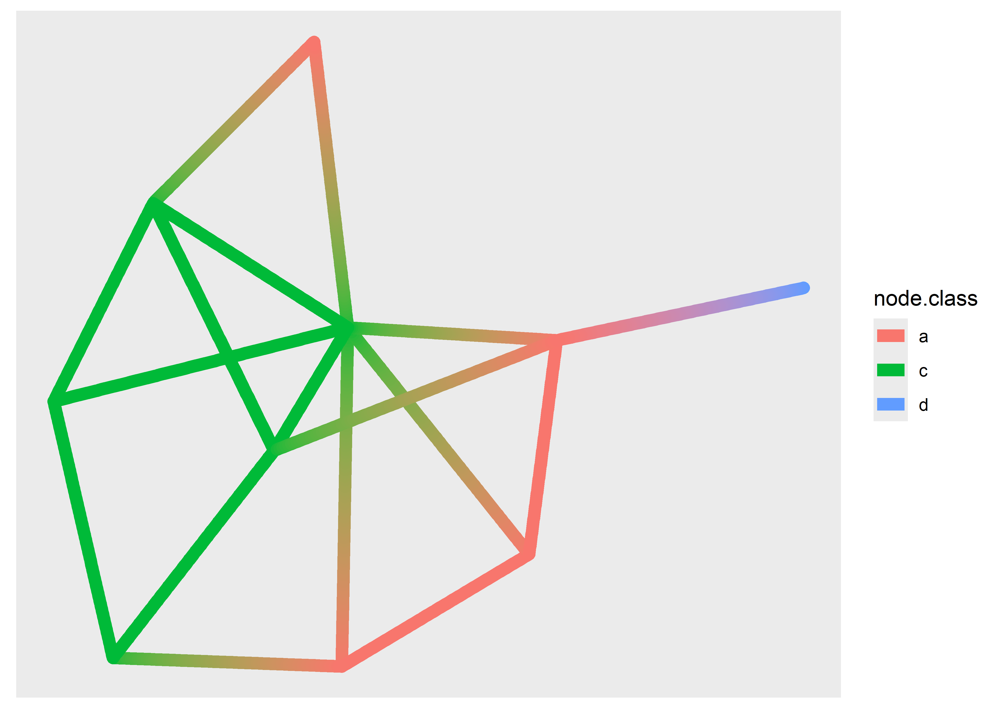

library(tidygraph)
graph <- play_erdos_renyi(n = 10, p = 0.2) %>%
activate(nodes) %>%
mutate(class = sample(letters[1:4], n(), replace = TRUE)) %>%
activate(edges) %>%
arrange(.N()$class[from])
#> Warning: `play_erdos_renyi()` was deprecated in tidygraph 1.3.0.
#> ℹ Please use `play_gnp()` instead.
graph
#> # A tbl_graph: 10 nodes and 18 edges
#> #
#> # A directed simple graph with 1 component
#> #
#> # Edge Data: 18 × 2 (active)
#> from to
#> <int> <int>
#> 1 9 2
#> 2 5 10
#> 3 8 5
#> 4 8 10
#> 5 9 8
#> 6 9 10
#> # ℹ 12 more rows
#> #
#> # Node Data: 10 × 1
#> class
#> <chr>
#> 1 a
#> 2 d
#> 3 c
#> # ℹ 7 more rows7 Networks
You are reading the work-in-progress third edition of the ggplot2 book. This chapter is currently a dumping ground for ideas, and we don’t recommend reading it.
Like maps and spatial data, networks and graphs occupy a special part of the visualization landscape, but whereas spatial data mostly differ from regular plotting in their use of projections, networks bring their own data structure as well as their own visualization paradigms to the table. Because of these complications networks are not directly supported in ggplot2. Several efforts over the years have tried to add this missing piece, and in this chapter, we will see how to use ggraph for network visualization. Other packages that offer some of the same functionality includes geomnet, ggnetwork, and GGally for regular network plots, and ggtree and ggdendro for tree visualization specifically.
7.1 What is network data?
Networks (or graphs as their mathematical concept is called) are data that consists of entities (nodes or vertices) and their relation (edges or links). Both nodes and edges can have additional data attached, and edges can furthermore be considered directed or undirected depending on the nature of the connection (a network encoding mutual friendship would have undirected edges, whereas an ancestor network will have directed edges because child-of is not a symmetrical relation).
The nature of network data means that it is not readily representable in a single data frame, which is one of the key complications to using it with ggplot2. However, it can be encoded as two interrelated data frames, one encoding the nodes, and one encoding the edges. This is the approach used in tidygraph, which is the data-manipulation package underlying ggraph. To make better use of ggraph it is thus beneficial to understand a little about tidygraph.
7.1.1 A tidy network manipulation API
tidygraph can be considered first and foremost a dplyr API for network data, allowing the same semantics for manipulating networks as is known from dplyr. An example of this can be seen below where we create a random graph using the Erdős-Rényi sampling method, assign a random label to the nodes, and sort the edges based on the label of their source node.
While mutate(), arrange(), and n() are well-known, we can see some new functions that needs explaining: activate() informs tidygraph on which part of the network you want to work on, either nodes or edges. Further, we see the use of .N() which gives access to the node data of the current graph even when working with the edges (there’s also a corresponding .E() function to access the edge data, and .G() to access the whole graph).
7.1.2 Conversion
Network data is often presented in a range of different formats depending on where you get it from. tidygraph understands most of the different classes used in R for network data and these can be converted using as_tbl_graph(). Below is an example of converting a data frame encoded as an edgelist, as well as converting the result of hclust().
data(highschool, package = "ggraph")
head(highschool)
#> from to year
#> 1 1 14 1957
#> 2 1 15 1957
#> 3 1 21 1957
#> 4 1 54 1957
#> 5 1 55 1957
#> 6 2 21 1957hs_graph <- as_tbl_graph(highschool, directed = FALSE)
hs_graph
#> # A tbl_graph: 70 nodes and 506 edges
#> #
#> # An undirected multigraph with 1 component
#> #
#> # Node Data: 70 × 0 (active)
#> #
#> # Edge Data: 506 × 3
#> from to year
#> <int> <int> <dbl>
#> 1 1 13 1957
#> 2 1 14 1957
#> 3 1 20 1957
#> # ℹ 503 more rowsluv_clust <- hclust(dist(luv_colours[, 1:3]))
luv_graph <- as_tbl_graph(luv_clust)
luv_graph
#> # A tbl_graph: 1313 nodes and 1312 edges
#> #
#> # A rooted tree
#> #
#> # Node Data: 1,313 × 4 (active)
#> height leaf label members
#> <dbl> <lgl> <chr> <int>
#> 1 0 TRUE "101" 1
#> 2 0 TRUE "427" 1
#> 3 778. FALSE "" 2
#> 4 0 TRUE "571" 1
#> 5 0 TRUE "426" 1
#> 6 0 TRUE "424" 1
#> # ℹ 1,307 more rows
#> #
#> # Edge Data: 1,312 × 2
#> from to
#> <int> <int>
#> 1 3 1
#> 2 3 2
#> 3 8 6
#> # ℹ 1,309 more rowsWe can see that tidygraph automatically adds additional information when converting, e.g. the year column in the highschool data, and the label and leaf property of the nodes in the hierarchical clustering.
7.1.3 Algorithms
While simply manipulating networks is nice, the real benefit of networks comes from the different operations that can be performed on them using the underlying structure. tidygraph has rich support for a range of different groups of algorithms such as centrality calculation (which node is most central), ranking (order nodes so nodes are located close to those they are connected to), grouping (finding clusters inside the network), etc. The algorithm API is designed to be used inside mutate() and will always return a vector with length and order matching the nodes or edges. Further, it does not require you to specify the graph or nodes you want to calculate for since this is given implicitly in the mutate() call. As an example, we will calculate the centrality of the nodes in our sample graph using the PageRank algorithm and sort the nodes according to that:
graph %>%
activate(nodes) %>%
mutate(centrality = centrality_pagerank()) %>%
arrange(desc(centrality))
#> # A tbl_graph: 10 nodes and 18 edges
#> #
#> # A directed simple graph with 1 component
#> #
#> # Node Data: 10 × 2 (active)
#> class centrality
#> <chr> <dbl>
#> 1 c 0.220
#> 2 a 0.165
#> 3 c 0.140
#> 4 a 0.128
#> 5 c 0.128
#> 6 a 0.0703
#> # ℹ 4 more rows
#> #
#> # Edge Data: 18 × 2
#> from to
#> <int> <int>
#> 1 6 7
#> 2 2 1
#> 3 8 2
#> # ℹ 15 more rows7.1.4 Want more?
This is just a brief glimpse into tidygraph, for the sake of understanding ggraph. If you are interested in learning more, the tidygraph website gives an overview of all the functionalities in the package: https://tidygraph.data-imaginist.com
7.2 Visualizing networks
ggraph builds on top of tidygraph and ggplot2 to allow a complete and familiar grammar of graphics for network data. Still, it is a little different from most ggplot2 extension packages since it works with another data type that is fundamentally different from tabular data. More so, most network visualizations don’t concern themselves with mapping variables to x and y aesthetics since they are concerned with showing the network topology more than relations between two variables. In order to show network topology, the concept of layouts are employed. Layouts are algorithms that use the network structure to calculate (often arbitrary) x and y values for each node that can then be used for visualization purposes. To put it in another way, when plotting tabular data the x and y aesthetics are almost always mapped to existing variables in the data (or statistical transformations of existing data) whereas when plotting network data x and y are mapped to values derived from the topology of the network and which are by themselves meaningless.
7.2.1 Setting up the visualization
Whereas a normal ggplot2 plot is initialized with a ggplot() call, a ggraph plot is initialized with a ggraph() call. The first argument is the data, which can be a tbl_graph or any object convertible to one. The second argument is a layout function and any further arguments will be passed on to that function. The default layout will choose an appropriate layout based on the type of graph you provide, but while it is often a decent starting point you should always take control and explore the different layouts available — networks are notorious for their ability to show non-existing or exaggerated relations in some layouts. There are more to layouts than described in this section. The Getting Started guide to layouts will tell you even more and showcase all the different layouts provided by ggraph.
7.2.1.1 Specifying a layout
The layout argument can either take a string or a function. If a string is provided, the name will be matched to one of the build in layouts (of which there are many). If a function is provided it is assumed that the function takes a tbl_graph and returns a data frame with at least an x and y column and with the same number of rows as there are nodes in the input graph. Below we can see examples of using the default layout, specifying a specific layout, and providing arguments to the layout (which are evaluated in the context of the input graph):
library(ggraph)
ggraph(hs_graph) +
geom_edge_link() +
geom_node_point()
#> Using "stress" as default layoutggraph(hs_graph, layout = "drl") +
geom_edge_link() +
geom_node_point()hs_graph <- hs_graph %>%
activate(edges) %>%
mutate(edge_weights = runif(n()))
ggraph(hs_graph, layout = "stress", weights = edge_weights) +
geom_edge_link(aes(alpha = edge_weights)) +
geom_node_point() +
scale_edge_alpha_identity()In order to show the graph above we’re using the geom_edge_link() and geom_node_point() functions, and while we have not yet discussed these they do exactly what you may imagine: drawing nodes as points and edges as straight lines.
7.2.1.2 Circularity
Some layouts may be used in both a linear and circular version. The correct way to change this in ggplot2 would be to use coord_polar() to change the coordinate system, but since we only want to change the position of nodes in the layout, and not affect the edges, this is a function of the layout. The following can show the difference:
ggraph(luv_graph, layout = "dendrogram", circular = TRUE) +
geom_edge_link() +
coord_fixed()ggraph(luv_graph, layout = "dendrogram") +
geom_edge_link() +
coord_polar() +
scale_y_reverse()As we can see, using coord_polar() will bend our edges, which is hardly a desirable choice.
7.2.2 Drawing nodes
Of the two types of data stored in a graph, nodes are by far the ones that is most alike to what we are used to plotting. After all, they are often shown as points in very much the same way as observations are displayed in a scatter plot. While conceptually simple we still won’t cover everything there is to know about nodes, so as with layouts the interested reader is directed towards the Getting Started guide to nodes to learn more. All the node drawing geoms in ggraph are prefixed with geom_node_ and the one you are most likely to use the most is geom_node_point(). While it may superficially look a lot like geom_point() it has some additional features that it shares with all node and edge geoms. First, you don’t have to specify the x and y aesthetics. These are given by the layout and their mapping is implicit. Second, you have access to a filter aesthetic that allows you to turn off the drawing of specific nodes. Third, you may use any tidygraph algorithms inside the aes() and they will get evaluated on the graph being visualized. To see this in action we plot our highschool graph again, but this time only showing nodes with more than 2 connections, and colored by their power centrality:
ggraph(hs_graph, layout = "stress") +
geom_edge_link() +
geom_node_point(
aes(filter = centrality_degree() > 2,
colour = centrality_power()),
size = 4
)Being able to use algorithms directly inside the visualization code is a powerful way to iterate on your visualization as you don’t need to go back and change the input graph.
Apart from points, there are more specialized geoms, many tied to a specific type of layout. If one wishes to draw a treemap the geom_node_tile() is needed:
ggraph(luv_graph, layout = "treemap") +
geom_node_tile(aes(fill = depth))
#> Warning: Existing variables `height` and `leaf` overwritten by layout variables7.2.3 Drawing edges
Edge geoms have a lot more bells and whistles than node geoms, mainly because there are so many different ways one can connect two things. There is no way to cover it all, both in terms of the different types of geoms, as well as the common functionality they have. The Getting Started guide to edges will give a complete overview.
We have already seen geom_edge_link() in action, which draws a straight line between the connected nodes, but it can do more than we’ve seen already. Under the hood it will split up the line in a bunch of small fragments and it is possible to use that to draw a gradient along the edge, e.g. to show direction:
ggraph(graph, layout = "stress") +
geom_edge_link(aes(alpha = after_stat(index)))If you are drawing a lot of edges this expansion might become prohibitively time consuming and ggraph provides a 0 suffixed version that draws it as a simple geom (and doesn’t allow you to draw gradients). Further, for the special case where you want to interpolate between two values at the end points (e.g. variables on the nodes) a 2 suffixed version exist as well:
ggraph(graph, layout = "stress") +
geom_edge_link2(
aes(colour = node.class),
width = 3,
lineend = "round")
The use of the node.class variable might surprise you. Edge geoms have access to the variables of the terminal nodes through specially prefixed variables. For the standard and 0 version these are available through node1. and node2. prefixed variables, and for the 2 version they are available through node. prefixed variables (as used above). The three versions of edge geoms are common to all edge geom types, not just geom_edge_link().
There are more ways to draw edges than simple straight lines. Some are specific to trees or specific layouts, but many are general purpose. One specific use-case for another edge type is when you have multiple edges running between the same nodes. Drawing them as straight lines will obscure the multiplicity of the edges, which is e.g. apparent with the highschool graph where multiple parallel edges are present but invisible in the plots above. In order to show parallel edges you can either use geom_edge_fan() or geom_edge_parallel():
ggraph(hs_graph, layout = "stress") +
geom_edge_fan()ggraph(hs_graph, layout = "stress") +
geom_edge_parallel()It is clear that these geoms should only be used for relatively simple graphs since they increase the amount of clutter and overplotting in the plot. Looking at trees and specifically dendrograms, one commonly used edge type is the elbow edge:
ggraph(luv_graph, layout = "dendrogram", height = height) +
geom_edge_elbow()geom_edge_bend() and geom_edge_diagonal() are smoother versions of this.
7.2.3.1 Clipping edges around the nodes
A common issue, especially when using arrows to show directionality of edges, is that the node will overlap the edge because it runs to the center of the node, not the edge of the point showing the node. This can be seen below:
ggraph(graph, layout = "stress") +
geom_edge_link(arrow = arrow()) +
geom_node_point(aes(colour = class), size = 8)Obviously, we would like the edges to stop before they reach the point so that the arrow is not obscured. This is possible in ggraph using the start_cap and end_cap aesthetics which allow you to specify a clipping region around the terminal nodes. To fix the above plot we would set a circular clipping region of the correct size around each node:
ggraph(graph, layout = "stress") +
geom_edge_link(
arrow = arrow(),
start_cap = circle(5, "mm"),
end_cap = circle(5, "mm")
) +
geom_node_point(aes(colour = class), size = 8)7.2.3.2 An edge is not always a line
While it is natural to think of edges as different kinds of lines connecting points, this is only true for certain network plot types. One should always be mindful that nodes and edges are abstract concepts and can be visualized in a multitude of ways. As an example of this we can look at matrix plots which show nodes implicitly by row and column position, and show edges as points or tiles.
ggraph(hs_graph, layout = "matrix", sort.by = node_rank_traveller()) +
geom_edge_point()7.2.4 Faceting
Faceting is not a concept often applied to network visualization, but it is just as powerful for networks as it is for tabular data. While the standard faceting functions in ggplot2 do technically work with ggraph, they do not on a conceptual level, since nodes and edges are connected and splitting nodes on multiple subplots will automatically move edges with them even though the edges do not have the faceting variable in their data. Because of this, ggraph provides its own specialized versions of facet_wrap() and facet_grid(). facet_nodes() and facet_edges() are will target either nodes or edges and wrap the panels in the same manner as facet_wrap(). For facet_nodes() the convention is that if an edge goes between two nodes in the same panel it will be shown in that panel, but if it is split between multiple panels it will be removed. For facet_edges() nodes will be repeated in all panels. To see it in action we can look at our highschool graph and see how their friendships have evolved over the years.
ggraph(hs_graph, layout = "stress") +
geom_edge_link() +
geom_node_point() +
facet_edges(~year)As it becomes very clear with faceting, we see a clear evolution of the friendships going from two completely separate groups to a more mixed single group.
As faceting also accepts tidygraph algorithms it is a great way to evaluate e.g. the result of groupings on the fly.
ggraph(hs_graph, layout = "stress") +
geom_edge_link() +
geom_node_point() +
facet_nodes(~ group_spinglass())The last included facet type is facet_graph() which works as facet_grid(), but allows you to specify which part the rows and columns should facet on, edges or nodes.
7.3 Want more?
This is just a taste of the possibilities presented in ggraph. If you want to dive deeper you may find the resources in https://tidygraph.data-imaginist.com and https://ggraph.data-imaginist.com helpful. Understanding the tidygraph foundation and API will increase your mastery and understanding of ggraph, so make sure you study them in unison.